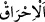
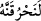

asla dönmeyecektir. Bilakis dünyada sana gereken cezâyı verdikten sonra âhirette de
cezâlandıracaktır.
“Tapmakta olduğun” kendisine ibâdete devam ettiğin “ilâhına da bak!” mâbûdun
olduğunu iddiâ ettiğin şeye bir bak! “Yemin ederim, biz onu” ateşte “yakacağız;”
kelimenin “ (ateşte yakmak)” kökünden “ şeklinde kırâati de bu mânâyı
kuvvetlendirmektedir. “el-İhrâk” bir şeyi alevli ateşe vermektir. “ ise böyle
değildir. Çünkü “ ise döverek elbiseyi ovalamak gibi, ateş olmadan bir şeye
ise döverek elbiseyi ovalamak gibi, ateş olmadan bir şeye
harâret vermektir. Kâşifî der ki: “Bu görüş o buzağının eti ve postu olduğunu söyleyen
kimseye âiddir.” Ya da törpü ile bir şey törpülendiğinde fazla ısınması anlamındadır. “ şeklindeki kırâat da bunu desteklemektedir. Kâşifî der ki: “Bu görüş ise o
buzağının altından cesedi olduğunu, fakat diri olmadığını söyleyen kimseye âiddir.”
“Sonra da onu parça parça edip denize savuracağız!.” Onu ateşte yakıp küllerini
veya un ufak edip zerrelerini denize savuracağız. Böylece o buzağı heykelinden hiçbir
iz, eser kalmayacak.
Kâşifî der ki: “O buzağıyı parçalayıp külünü denize savurayım ki o buzağıyı yakmanın
mümkün olduğunu, ona ilâhlık sıfatı vermenin cehâletin tâ kendisi ve tamamen hakikatin
tersi olduğunu bilsinler.”
98. Sizin ilâhınız, kendisinden başka ilâh olmayan Allah’tır. O’nun ilmi her şeyi
kuşatmıştır.”
“Sizin ilâhınız,” ibâdet edilmeye yegane müstehak olan ve “kendisinden başka ilâh
olmayan Allah’tır.” Ne sûretle olursa olsun, hiçbir şey O’nun ortağı ve benzeri olamaz.
Ülûhiyette tek ve benzersiz oluşu da bu cümledendir.
Bahru’l-ulûm’da şöyle der: “kendisinden başka ilâh olmayan” ifadesi, ülûhiyyetin
tahsîsini (yalnız O’na mahsûs olduğunu) belirtir. Tıpkı “kıble, kendisinden başka kıble
olmayan Kâbe’dir” demek gibi.
“O’nun ilmi” olan ve olacak “her şeyi” her şeyin ilmini “kuşatmıştır.” Sanki burada
şöyle denilmiştir: “Sizin ilâhınız, ilmi her şeyi kuşatandır, ne olursa olsun başkası değil.
Şüphesiz bu ‘başkası’na buzağı evveliyetle dahildir.
Kâşifî der ki: “Sen bönlük ve câhillikte o buzağıdan daha ilerisin.”
Rivâyete göre Mûsâ (a.s.) buzağıyı tuttu ve boğazladı. Sonra onu ateşe verdi ve
külünü de denize savurdu. Fazlasıyla onu cezâlandırdı ve böylece Sâmirî’nin
gayretlerini boşa çıkardı ve ona aldananların da bönlüklerini âşikâr kıldı.
Hz. Mûsâ’nin elinde ne işe yarar Sâmirî’nin sihri
Hâfız der ki: